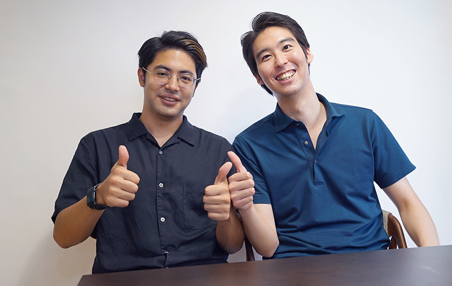
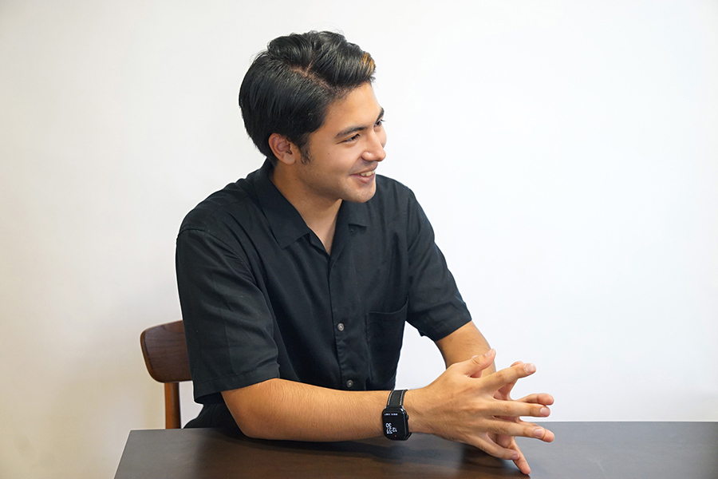
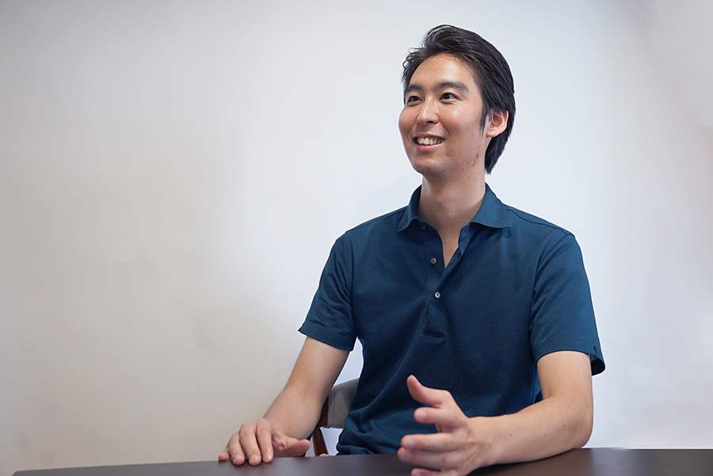
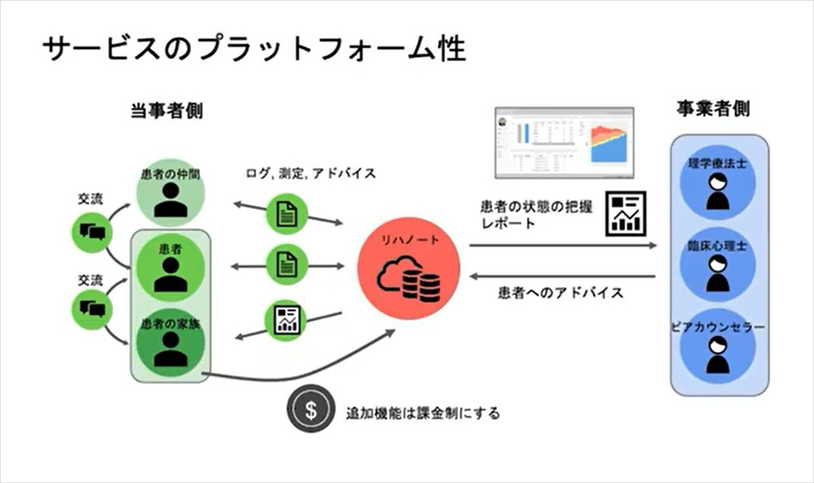
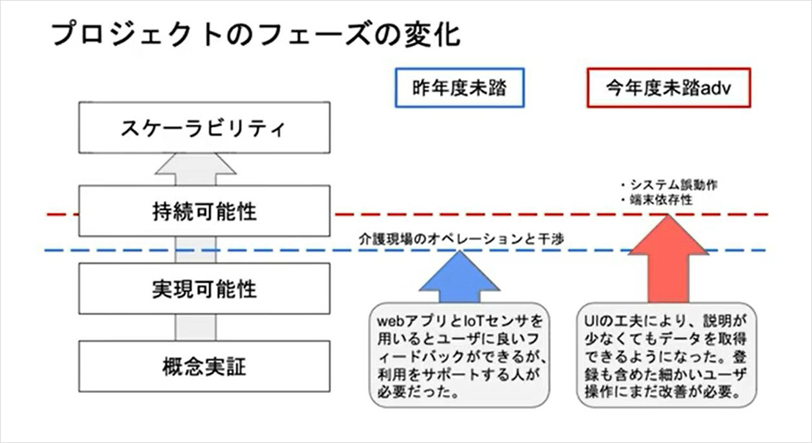

未踏スーパークリエータが共創したプロジェクトの舞台裏
未踏のプロジェクトでは、別々に活動していたクリエータ同士が未踏の場で知り合い、共にプロジェクトの応募に至る場合もあります。今回は未踏スーパークリエータが共に取り組んだ、2020年度未踏アドバンスト事業実施プロジェクト「治癒状態共有webサービスの開発」の舞台裏を紹介。イノベータの田脇裕太さんと森山多覇さんに、未踏クリエータが共創することになったきっかけや未踏コミュニティの活用法について語っていただきました。

二人の未踏クリエータが、共にプロジェクトを立ち上げたきっかけ
── まずは、お二人が未踏に応募されたきっかけを聞かせてください。
田脇：未踏に応募した頃は、慶応大学でロボットによる人の支援や高齢者のバランス能力を評価する研究をしていました。実は以前から起業を考えていて、2018年に「キャンパスベンチャーグランプリ」という学生向けのベンチャーコンテストに応募して、受賞したことがあります。修士2年のときでした。
それをさらに展開しようと、2019年の未踏事業に「IoTを活用した介護予防のためのリハビリテーション支援システム」というテーマで応募しました。同採択で未踏スーパークリエータに認定され、現在は同テーマで大学発ベンチャーを立ち上げているところです。
森山：私も同じく2019年に「指先の触覚を身体の他部位に転移させるデバイスの開発」が採択されました。当時は博士課程1年で、電気通信大学の梶本研究室で触覚分野であるヒューマンインターフェースを研究していました。
応募したきっかけは、未踏に採択された先輩にいろいろ話を聞いているうちに、すごく楽しそうだと感じていたことです。先輩からも多覇君の研究内容だったらいけると思うよと背中を押してもらいました。梶本先生と未踏PMの稲見先生は、同じ研究室の出身で専門性が近かったことも動機の一つです。
その頃はメーカーで触覚の研究をする社会人ドクターもやっていたので、仕事をやりながら博士の学業を続けるモチベーションとなるものがということもあり、３足のわらじを履くことにはなりますが、未踏での経験は武器になるとも考えました。実際、未踏に応募していなかったら、まだ卒業せずに博士をやっていたかもしれないです(笑)。

── お二人は同年に未踏に採択されていますね。一緒にプロジェクトをやることになった経緯を教えてください。
田脇：そもそもは担当PMが稲見先生だったことですね。稲見チームは、4つの採択プロジェクトでメンバーは5人でした。その5人は仲がよくて、今でもよくごはんを食べに行っています。最初に顔合わせをしたときから、多覇君とはフィーリングが合うなと思っていました。
森山：未踏アドバンストは、田脇君からお誘いを受けて一緒に応募しました。田脇君のプロジェクトに対して、僕が持っているスキルセットが合っていたことと、社会的にも意義があって楽しそうだったので参加を決めました。
田脇：多覇君を誘ったのは、田中邦裕PMに「今後ビジネス化を考えているなら、他の未踏クリエータに手伝ってもらって未踏アドバンストに応募してみたら」とアドバイスをもらったことがきっかけとなりました。当初のサービス内容はセンサー技術を必要としていたので、多覇君のやりたいことと合う形で連携できればいいなと思いながら、声をかけました。

未踏クリエータが共にプロジェクトに取り組む相乗効果とは
── 未踏アドバンストに採択されたプロジェクトについて教えてください。
田脇：「治癒状態共有webサービスの開発」プロジェクトでは、脳卒中患者が退院後もリハビリ（生活期リハビリ）を継続できるように、脳卒中当事者がリハビリ状況を共有し合えるシステム（リハノート）を開発しました。モチベーション維持の支援や治癒状態の計測、リハビリデータを収集することで、当事者に適した自宅リハビリ環境を提供します。

── それぞれどのように役割分担したのですか？
森山：私は主にセンサーを使った動作解析や、アプリのUI設計を中心とした技術関連を担当しました。例えば、靴につけたセンサーで歩行したタイミングや距離を測ったり、体重計にセンサーをつけて重心のぶれを計測したりですね。センサーで取得したデータをもとに、現状のバランス能力や歩行の特徴をアプリに反映させるところも作っていました。
田脇：僕はプロジェクトリーダーとして、プロジェクトの進行やまとめ、ビジネス展開（マネタイズ面）などを主に担当しました。9カ月のプロジェクト期間でサービスからユーザーリサーチ、ビジネス化まで達成することが目標でした。
アプリのUI設計やセンサーの活用で、ユーザーへの説明が簡単に済ませられるようになったり、データ取得の性能が上がったりなど、多覇君の高い技術力に助けられました。

── 逆に、プロジェクトで苦悩・葛藤したことは何ですか？
森山：カメラやセンサーを使って計測した方がいいのか、もっと簡単にタブレットのアプリでできるものがいいのか。コロナ禍で患者さんの声をあまり聞けなかったことで、技術的に何を使っていくかの取捨選択が難しかったですね。
田脇：そうですね。技術的な課題というよりは、何を作るべきか、どこを目指すかがぶれてしまった。課題や論点を整理し切れていなかったことが問題点でした。今回脳卒中患者をサービスの対象にした理由は、リハビリにモチベーションを要すること、日本に100万人以上の患者がいること、保険外リハビリという新たな産業が生まれてきたことなどです。
マーケット自体はあるのですが、特殊なビジネス環境であるがゆえに、誰からお金をもらうのかという点が見切れなかった。患者にリハビリをゲームとして楽しんでもらえるものを作りたい、でもきちんとビジネスになるものにもしたいという両面でぶれてしまいました。
森山：僕も技術サポートとして声をかけてもらったこともあって、つい技術的な観点でばかり考えていたことは反省しています。田脇君にビジネスサイドを任せきりにしていた面がありましたね。短期間でどこを目指すかビジョンを固める難しさを実感しました。
田脇：イシューをしっかり定めれば、ビジネスモデルや技術の選択も自ずと固まってくるのですが、その設定が曖昧なまま、ソリューションだけ磨き上げようとしていました。
介護保険のデイサービスをターゲットとするなら、デイサービスに特化した保険点数を考慮したシステムを考えるべきだったし、リハビリ結果にこだわるなら保険外リハビリ施設を対象にセンサーを活用した機能を作るなど、対象と目的を絞るべきだったと思います。
現在は、未踏アドバンストと目指している方向は同じなのですが、別の観点から高齢者向けの足腰力を判定して、医療費の削減や転倒リスクを下げることに貢献するための事業に取り組んでいます。主なクライアントは、高齢者の従業員が多い会社やビルメンテナンス企業、地方自治体のシニア向けフィットネス事業などです。
未踏クリエータとチームを組むメリットは？
── 改めて、未踏クリエイタとチームを組むメリットとは何だと思いますか。
森山：今回田脇君のプロジェクトに参加したのは、PMが同じ稲見先生だったことと、技術のバックグラウンドが近いことでした。一方で、リハビリサービスは未知の世界。そういったところにもセンサーが役立つフィールドがあるんだと思いました。一つ強みとなるスキルセットを持っていれば、何にでも応用できることがわかったので、さらにスーパーゼネラリストを目指していきたいです(笑)。
田脇君は最初からビジネス化を目指したいと言っていたので、応援したいという気持ちもありました。未踏の仲間って、ある意味同僚みたいなもの。お互いの仕事のやり方もわかるし、当然そこには信頼がある。そういう前提があるから、コミュニケーションコストが少なくて済むというメリットがあると思います。
田脇：未踏の人はみんな自分なりのビジョンがまずあって、社会環境や様々なデータと自分の考えを組み合わせて、ストーリーを作ることができる。そこから今と何が違うかギャップを見つけて課題を掲げ、整理した論点に対してこんな技術で解決するんだと実装もできる。未踏はプロジェクト型教育なので、プロジェクト期間中でしっかり仕上げるという進捗管理も身に付けています。
未踏は優秀な人が揃っているし、ポテンシャルも高い。あとは相性が合うかどうかだけの問題だと思うんですよね。もし一緒に手伝ってほしい、誰かと一緒にやりたいというプロジェクトがあるなら未踏の中で探さない理由はないと思いますよ。
── 未踏コミュニティでの仲間を見つけ方、集め方のコツは何でしょう？
森山：自分が1つのことにあまり執着せず、面白そうなことはどんどんやってみるタイプなので意識したことはないですけど、自己開示しながら巻き込んでいくことでしょうか。
ただ未踏の人はサービス精神旺盛なので、基本的にはNOとは言わないですよね。技術的にハードルが高いほど、燃える人たちばかりだし。
田脇：未踏コミュニティは、わからないことや困っていることをちょっと相談するだけでも気軽に協力してくれる人たちが多いですね。
森山：優秀で教えるのが上手い人たちばかりですから、どんどん相談して声かけないともったいないですよ。
田脇：稲見チームは、最初に稲見先生と美味しい焼肉を食べたことをきっかけに、みんなでよく焼肉屋に行っていたのが良かったと思う。みんなでもう1回頑張ろうって励まし合ったり、しばらくしてからまたまた焼肉を食べに行って、「どうだった？」って話をすることでヒントをもらったり、自分のアイデアがクリティカルになっていった。一緒に食事をすることは大切だと思います。
森山：本当に仲良かったですね。肉だからテンションが上がったのかもしれない。幸せホルモンが出まくってました。未踏での交流をずっと持ち続けることは大事です。
田脇：最初から友だちになりたいと思ってコミュニケーションを取らないとずっと1人で研究することになる。未踏の人とお金を使って焼肉に行くというのも大切ですよね。みんなでどんどん焼肉食べに行ってください！
プロフィール
田脇 裕太（たわき ゆうた）さん
1994年、神奈川県生まれ。2017年、慶應義塾大学 理工学部卒業。2019年、慶應義塾大学 理工学研究科・ 前期博士課程 修了。2022年、慶應義塾大学 理工学研究科・後期博士課程 修了。2019年4月～2022年3月、国立研究開発法人産業技術総合研究所 人工知能研究センター、人間拡張研究センター リサーチアシスタント。2022年9月より、株式会社AYUMI BIONICS 代表取締役。
2019年、「IoTを活用した介護予防のためのリハビリテーション支援システム」（PM:稲見昌彦）で未踏事業採択。同採択において、スーパークリエータに認定。
2020年、未踏アドバンスト「治癒状態共有webサービスの開発」（PM:藤井 彰人）採択。
https://scrapbox.io/mitou-meikan/%E7%94%B0%E8%84%87_%E8%A3%95%E5%A4%AA
森山 多覇（もりやま たは）さん
1994年、エジプト生まれ。2019年、電気通信大学大学院 情報理工学研究科 情報学専攻 修士課程 修了。社会人ドクターとして、研究と仕事を両立させながら、2022年、電気通信大学大学院 情報理工学研究科 情報学専攻 博士課程 修了。2022年4月、大手メーカーに就職。
2019年、「指先の触覚を身体の他部位に転移させるデバイスの開発」（PM:稲見昌彦）で未踏事業採択。同採択において、スーパークリエータに認定。2020年、未踏アドバンスト「治癒状態共有webサービスの開発」（PM:藤井 彰人）採択。
https://scrapbox.io/mitou-meikan/%E6%A3%AE%E5%B1%B1_%E5%A4%9A%E8%A6%87
採択プロジェクト
未踏アドバンスト「治癒状態共有webサービスの開発」（PM:藤井 彰人）
https://www.ipa.go.jp/jinzai/advanced/2020/gaiyou_fj-2.html
https://www.youtube.com/watch?v=_N5GFo7YyxA